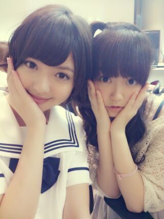
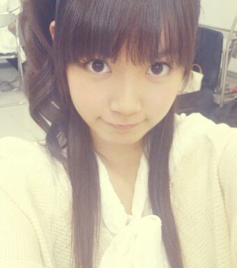
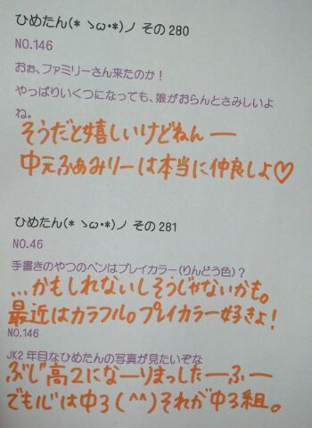
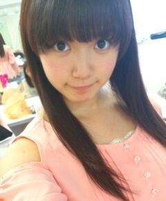
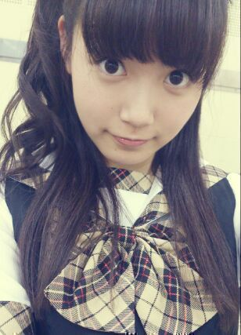
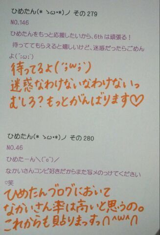
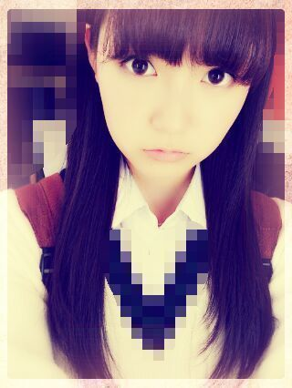
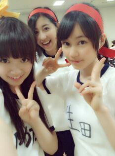
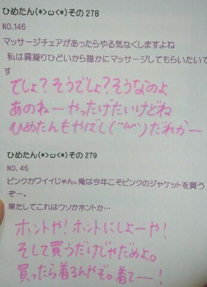

どーんー眠いよー
今日は通常盤「人間という楽器」！
楽しい曲になったと思∩^ω^∩
乃木うた的な感じで
みんなで仲良く楽しく
大切にしていきたい楽曲ですねー
曲中でウシさんの声まねしたよー
「モー」ってゆったよー
それウシじゃなくてひめたんじゃん！
と言われたけど(´・ω・｀)頑張ったよー
こちらはサンバちっくな感じっ
今回はいろんなメロディがあるねっ

まあや姫(〃ω〃)
チーム広島いえあっ
あっそうそう！
明日は名古屋全握ですねー
行くぜーって方は
一緒に楽しもうねーよろしくです♪
らりんブログにもあったけど
らりんひめたんでMCしますよー初だよー！
らりん頑張ろうね( ^ω^ )よろしくねっ

ひめたん大図鑑とは何か。それは、いわゆる
「過去の質問返しをまとめたもの」って
感じかな。
過去なので時制とかおかしなことになる質問も
中にはあるかもだけど、
ま、そゆことなんでねー

1089 まだ1回もイベント参加できてないけど、ひめきゅん続けてもいい?1090東京くらいしか握手行けないけどいい?←1091ワシみたいなじいさんが握手会に来ても嬉しいですか?10922ndから、ひめたんのところ行っても許してくれる?1093根っからのDD体質です。こんな俺でもひめたんのブログに今後もコメントしていいかな?1094複数推しだけど、2推しでもいい?
まだ1回もイベント参加できてないけど、ひめきゅん続けてもいい?1090東京くらいしか握手行けないけどいい?←1091ワシみたいなじいさんが握手会に来ても嬉しいですか?10922ndから、ひめたんのところ行っても許してくれる?1093根っからのDD体質です。こんな俺でもひめたんのブログに今後もコメントしていいかな?1094複数推しだけど、2推しでもいい?こゆ質問、たくさんの方からいただきます。
許可なんかいらないよー(>_<)ひめたんは応援してくれるだけで嬉しいのよー!
いつもありがとうございます。大好きよ(*^^*)
1095東京での暮らしはもう慣れたカナ?1096東京に引っ越して周りの環境に慣れてきたかな?1097東京の暮らしなはなれましたかな!?まだ早いか(笑)1098上京してみてどうですかぁ?1099都民生活はどうですかー??慣れてきましたよ(*^^*)
気付けば1ヶ月たってた。新しいとこ来たら、それだけ新しい出会いとか
新しい発見とかあって、ひめたんの脳はもんのすごい勢いで刺激されてるの!
1100東京での生活どんな感じ☆?楽しいっ!
東京生活も楽しいし、高校生活も楽しいから「東京高校生活」なんて組み合わせ最高に楽しい(o>ω<o)!
1101ホームシックになったらいつでも広島弁でコメントするけえ、ゆうてね!ああ嬉しい(*^^*)
広島人はじゃんじゃん広島弁でコメントして下さーい♪
これでひめたん寂しくなくなるね☆
1102東京の地下鉄は複雑で分かりづらいけど、ひめたんは慣れたカナ?地下鉄もばっちしですよー♪
とかゆーて、この前友達と2人して乗る電車間違えて迷子んなった('・ω・`)まだまだやんな。
1103東京に出てみて通じなかった言葉や標準語やと思ってた言葉ってあるー?1104メンバーに伝わらなかった方言ってある???「はぶてる」...拗ねるって意味なんだけどね。
漢字あると思って変換しようとも試みたけど、方言なんだね('・・`)
1105埼玉県といったら思い浮べるもの、イメージは、何でしょうか?ゆみ姉(岩瀬佑美子chan)さゆにゃん(井上小百合chan)るんるん(斎藤ちはるchan)かなりん(中田花奈chan)は埼玉出身だったよね♪
でも名物とか全然わからんっ。何ー誰か教えてー?るんるーん???
1106ひめたんにお願い&アドバイス。...(中略)だから「かわいい!」っていわれたら「ありがと!!」て言ってくれると嬉しいんだけど...全部読みました。ありがとうございます(*^^*)
これからは素直にみなさんの意見を聞き入れて頷けるように頑張るね!
1107なんでそんな可愛いんだい?好きな言葉がちくわ一会だから?('・ω・`)はいありがとうございます(^ω^)
さっそく。アドバイス通りにしてみたよ。んんん。
1108ひめたんは絶叫大丈夫な人だっけ?1109ひめたんホラーとかいける?1110絶叫系の乗り物って、好きですか?ホラーも絶叫も好きっ(o>ω<o)
かもんかもん。一緒に行こーう!!!
1111ディズニーランドは行ったことありますか?ありますよー♪
シーは幼かったから記憶がない('・ω・`)ランドは行ったの去年だもん!

(＊´・ω・＊)
こんばんわーすー
全握の詳細が発表されてましたが...
レーン抽選ですねー♪どきどき。
今日はtypeB「扇風機」！
アンダー楽曲ですっ
レゲエ調ってゆーんですかね
ガルルとはまた違った
夏ソングになってます( ^ω^ )
扇風機に向かって あー ってしたくなる曲！
レコーディングの時は私たちも
扇風機の向こうにマイクあって
あー ってやったんだよー
MVはねー雨にうたれたりしたんだけど
もうね結構冷たかったでっすっんふふ
愛未とボール遊びしてたりするので
よかったらさがしてみてー
あーそれから台所で宿題もしてますー
ひめたんてね鉛筆の持ち方おかしいんだけど
カメラ回ってる間はちょっと意識して
直してみたりしたんだよー
あっそうそう、
今回MVでは初のフロントポジションを
つとめさせていただきましたっ( ;ω; )！
万理華とかあしゅりーとかるんるんとか
めちゃめちゃ喜んでくれて。
まあライブパフォーマンスの時は
またちょっと違ったりするんですが
とりあえずいつもより
写していただいてると思うので( ;ω; )
みてねー

前回は大図鑑の説明を
すっかり省きました(´・ω・｀)
ひめたん大図鑑とは何か。それは、いわゆる
「過去の質問返しをまとめたもの」って
感じかな。
過去なので時制とかおかしなことになる質問も
中にはあるかもだけど、
ま、そゆことなんでねー

10712ndにもメンバーの映像が入るってほんと?
運営さんはうそなんかつきません(^ω^)!斯うご期待!
1072ひめたんの家族はみんなシーフード無理なん??それともひめたんだけ??
ひめたんだけだねー。
ままはシーフード大好きなのにアレルギーなの('・・`)
107347都道府県の中で、どこに行ったことありますか?どこの県が好きですか?
千葉、埼玉、東京、神奈川、静岡、愛知、富山、滋賀、大阪、京都、岡山、鳥取、島根、山口、福岡。
10743年生の担任はどんな人でしたか?
体育科の女の先生!
今でもたまに連絡してくれます。
活動したり東京で受験したり、中元さん面倒な生徒だったんですよね。
でも最後まで支えてくれた素敵な先生です☆
1075質問したらどのくらいたったら答えてくれるの??
う...ごめんなさい...。
できるだけタイムリーに答えられるよう努めます(ノω・`)しばしお待ちをー☆
1076ひめかの名前の由来ってなんですかーーっ!
1077日芽香の名前の由来は?
1078日芽香ってご両親がどういった思いがあったのかぁと...
1079日芽香と名付けたのは誰ですか?由来を教えて下さい
ひめたんが生まれた日の病院の窓から見た景色
◎日 暖かいお日様
◎芽 桜の花びらからのびる新芽
◎香 風に散る桜の花の香り
のような女の子に育ちますようにという意味が込められているそうです。
まま、ありがとーうっ
1080同じ誕生日のひめたん、その日は誰と誕生日を過ごしますか?
わーおめでとうございます!
ひめたんは学校にも行くしめんばーにも会う予定。
お互いにとって素敵な日になりますように☆
1081あみみのモノマネって前にミタパンブーでやってたやつだよね!
大阪の個握でリクエストしていい?
んー正確に言うとね、あみあみ(能條愛未chan)がひめたんの物真似をするんだけどね(ω)♪
この前の撮影の時は「ひめたんの物真似をするあみあみの物真似」をしたの。それ今度やりましょか(^^)??
10821日だけ他のアイドルになれるとしたらどこのグループになってみたい
ももクロZさん!
脳震盪起こすくらいに踊り狂ってみたい!!!
1083同い年な人ってどう??ww
勝手に親近感(*^^*)ふふふ
1084次の個別でやってみたい髪型とかある?
どうしよかなー(ω)考えてなかった。いっつもその日の気分だからなー。何かリクエストありますかー??
1085休みの日は何してるの?
お散歩、読書、ぶろぐの質問まとめ、こんなかんじですかね(∀)☆
1086最近観たい映画あるのかな?
最近ゆーか前からずっとなんだけど、ひめたん3Dメガネかける映画見たことないんよ!
時代に置いてかれるーいややぁ(ノω;`)
1087ファンレ出したいんだけど、特別に書き足して欲しいこととかあるかな??
1088まだ握手したことないけどお手紙書いてもいい?
お手紙好きよ＼(^O^)／中身はおまかせいたしますよ♪♪
中身?お弁当みたいなニュアンスね。
ちゃんと読むけーね。
今度いつ会社行くかわからんけちょっと時間かかるかもだけどちゃんと読むけ。ありがとーう!!!
コウモリよ 歌い分けどこー？って
コメントがたくさんありましたが、
当ててみてー♪るん
(＊´・ω・＊)
祝☆6thシングル「ガールズルール」発売！
そしてオリコンデイリーチャート1位！
本当に本当にありがとうございます(〃ω〃)
ライブのパフォーマンスとか握手会とかで
全力で感謝の気持ちを伝えていきたいなー
この作品で
また今までとは違った乃木坂を
知ってくださいねっ
今回は本当にありがたいことに
全部で３曲参加楽曲があります( ^ω^ )
じゃあ今日はtypeA「コウモリよ」！
「コウモリよ」は
ユニット曲になってます
まいやん、若月、愛未、ひめたん！
ユニット曲は2ndの 海流の島よ 以来っ
愛未とのユニゾンも新鮮かも( ω )
なにせ乃木坂にはなかった
メタルに挑戦とゆーことでー
夏だし。
こーゆーのもアリかしらどうかしら。
レコーディングルームの照明落として
ちょっと雰囲気作ったの
伝わりますかねー
ダンスもかっくいーんだよー♪
残りの２曲はまた明日。
あーあと、
みなさんに謝らないといけないのが
NOGIBINGO!初回オンエア
告知忘れてた(´・ω・｀)ごめんなさーい
これ衣装だよーこれで許してー


1051まだ部屋の収納とか家具とか揃ってないの?
1052IKEA派?ニトリ派?家具にこだわりとかってある?
1053IKEAで何か雑貨とか家具と買ったの?
家具ねっいろいろ話し合ってはいるんだけどね意見がまとまらんのんよね←
IKEA派!この前初めてIKEAに感動しました!!!
おっきい家具は買わなかったけどハンガーとか、サーモンとか買って帰りましたよ☆
1054ロッククライミングやってるんだけど、どう思う?
へーすごーい怖そうっ
cmのやつだよね??んーおとこのこって感じ
(。・ω・。)!
1055乃木坂のメンバーってけっこう頭いいメンバーいると思うけど、ひめたんもけっこう頭良かったりする??
みんなは賢いねえ♪
中元さんはまったくそんなことないでございます(д)
1056宝物は?
ひめきゅんさん、めんばー、おともだち。
ひめたんに関わる全てのみなさんが宝物です。
いつもありがとう(^ω^)♪
1057もうすぐ誕生日だね(^^)
ファンレター以外に何かプレゼント送ってもいいかな?☆
福山に住んでるので、バラとかどうかな?キザすぎるかな(笑)
バラ!いいねえキザだねえ(*'`*)嘘です。
でも本当に素敵!ひめたんバラ祭り行ったことあるよ♪
プレゼントはおまかせしますよー☆
ありがとうございますっ
1058桜好き?
桜すき＼(^O^)／
桜餅もすき。でもさくらんぼは普通...。
1059放送部にも全国大会あるんですね!!何を競い合って成績が決まるんですか?
個人で朗読とアナウンス、団体でテレビ、ラジオ部門があります(^^)!
燃えるんだよねこれがっ
1060放送部だったんだ!スピーチとかするのかな?
スピーチとはちょっと違うけど、毎日校内放送かけてましたよ♪
1061東京ミッドタウン歩けるの?迷子にならない?
ひとりだったらよー歩かん('・・`)
し、ひとりなら空気よんで引き返します多分...。
10623年のときでも学級委員とかあったん?
学校のクラスでのエピソードとかあったら教えてほしいな♪
ありましたよ!え3年生は学級委員ないのー(ω)?
3年4組はにぎやかなんです。ちゃんとしなきゃいけない時も。ありゃりゃ←
1063ボクシングしてる人ってどうですか?応援してくれますか?
ボクシングわひゃああっ
テレビとかで見てて、痛くないかな大丈夫かなって思ってたの('・ω・`)
気をつけてね!超応援する!
左胸はみーんな共感できる応援歌だから。頑張りたい時辛い時聴いてください♪
立ち上がる回数諦めるなっ!!!
1064生誕企画どうだったかな?喜んでくれたらいいな!
本当に本当に嬉しかった!
あんね、どなたかコメントに書いてくださったけど、4月生まれっていつも損するの。
毎年クラス替えしてすぐが誕生日だから、みんな自分の誕生日を知らないじゃん...
だから今年はお祝いしてもらってTシャツも可愛くて素敵な誕生日になりました(^^)♪
まだ13日なってないけど満足です//ぽ
1065マイメロ好きですか?
マイメロちゃん可愛いよね(*'`*)
赤と白のおかおってだけで身につけたくなるもん♪♪
ちなみに今のふでばこぴんくマイメロちゃん☆
1066久しぶりにひめたんに手紙書こうかな?書いてほしい?笑
1067お手紙書きたいと思ったのですが、忙しいのに読んでもらえますか?
お手紙超好きだよ書いてほしいもん♪
だから毎日会う友達にも「お願いお手紙書いてー('`)」って言ってたなあ...
でもほんとに何の時間削ってでも読むよ//
1068好きなジュース何??
ミキサーで作る(強調)
いちごジュースばななジュース♪
1069何か楽器出来ますか?
ぴあの歴5年にして両手で弾けません。真面目に。
ソプラノリコーダー、音よれよれなけど一応 篠笛。
それからタンバリンは感覚で演奏できる気がする!
ボディパならかずみさん(高山一実chan)だね☆ぐるカーのPVでも披露したしねっ

(＊´・ω・＊)

先にアナウンスしておきます
次回からテスト終わるまで
ひめたん大図鑑をお届けする予定です( ω )
ごめんね。
ちょこっと日記も書くかもー
ほら、ちょうど今週は発売週だしっ
CD聴きながら待っててね！
先週のスパカン！
聞いていただけましたか？
感想なんかコメント書いてくれた
方もいらっしゃいましてーもーほんとに
嬉しかったですー///
ムロツヨシさん
めちゃめちゃめーちゃー素敵な方でした♪
あーゆーラジオは
初めてだったので
ちょっと緊張してたんだけども
とっても優しくしていただいて(〃ω〃)
これからも毎週スパカン！聴きますっ
また呼んでくださーいー♪るん
この前は乃木どこの収録に
参加してきましたー
どうかなオンエアされるのいつかなー
みてみてねーよろしくねー！
あっお手紙とプレゼント
受けとりましたっ( ω )
いつもありがとうございますっ
ひめたはねーお手紙読むの好きだからねー
いつもお手紙読むの楽しみなのー♪
あーあのねーそういやねー
昨日はぱぱたちが東京きてたんだよー
ゆーても、テスト前かつ撮影だったから
あんましゆっくりできなかったけど
それでも会えてよかったー(〃ω〃)
あっ
そういやそういや
「扇風機」MV公開されてましたー！
詳しくはオフィシャルサイトへ☆
この撮影も楽しかったので
いつかゆっくりお話したいなー
とりあみてみてーみんなびしょびしょ( ω )
さらに、1stの個人PVが
公開されてますのでー
最近ひめたん好きよーて方も
ずーっとひめたん好きよーて方も
今までひめたん好きだったよーって方も...
ん(´・ω・｀)あれ(´・ω・｀)
とっとりあえずいろんなことしてるから
みてみてねーう
ちゅーしちゃうぞーは
ここから生まれたんだぞー

現役感はでてますでしょうか中３組。
あたしだけチーム違いましたー
でもずーっと仲良し中３組。
ちょっと質問きてたんで
さらっとお答えしとくと
ゼッケンはみんな手書きだよー

お茶会♪
(＊´・ω・＊)